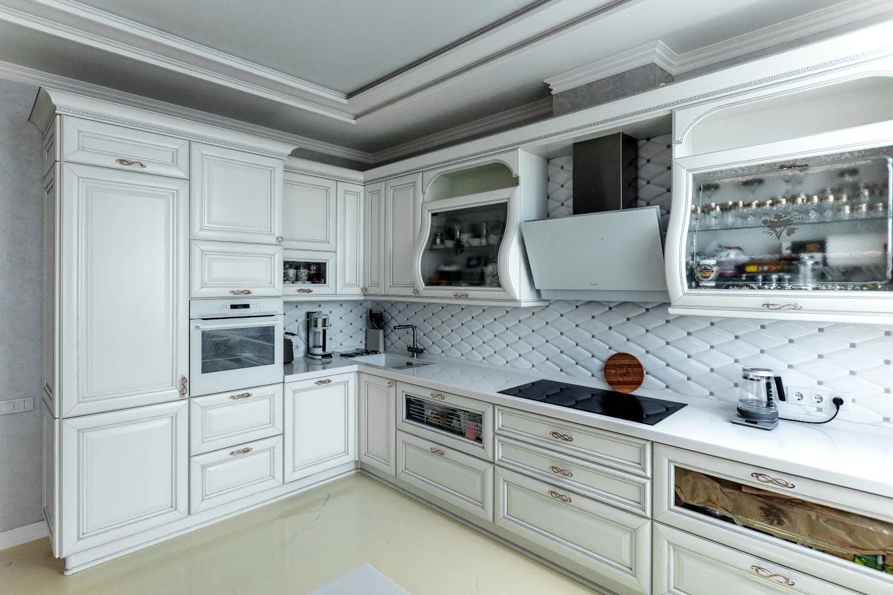

ГУДИНИ · Ростов-на-ДонуКухня.
Кухня.
Как вы задумали.
Изготавливаем мебель на заказ в Ростове-на-Дону. Кухни, шкафы и гардеробные под планировку вашего дома.
Рассчитать мою кухню
ПРИМЕРЫ РЕШЕНИЙБольше порядка.
Больше порядка.
В каждой комнате.
Расположение секций и сочетание фасадов подбираются под ваш интерьер. Посмотрите варианты кухонь и систем хранения, обсудим мебель под ваши размеры.
Обсудить мебель